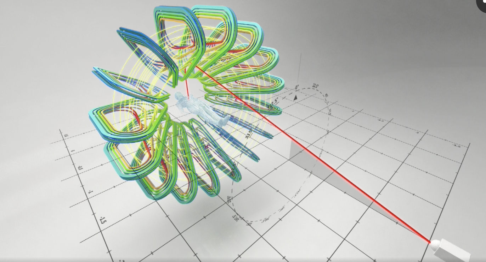

As I learned math in class I always tried to refer to real life applications of things but as we got school went on and the math became more complex it was harder to see real life examples than for example calculating a percentage which we use every day. However the more I get to know about physics the more math is used and it has always interested me to see how physics problems can be resolved using mathematics.
During this investigation I chose to focus on aerodynamics because I want to later on study engineering and thought that it would be a good idea to find out more on these topics and how math is used in those specific areas. More specifically I choose to study the relationship between the thickness because it is a major factor as it will affect the surface area and it will affect the weight the wing can support. In addition this is one of the less regarded factors but it is still important as it directly affects the price of the plane's wing which every company will want to minimize in comparison to looking at the angle of attack of a plane when taking off.
The mathematics that I will be using will first be making a function to match the data modeling a wing for a wing secondly looking at the area under a curve to find the area of the platform of the wing ( the bottom side), thirdly I used integrals to find distance between points on a curve and finally as the result where nonlinear I used natural logarithms to make the result non linear.
See the complete investigation click Here
Medicine and various other areas study the effect of magnetic and electric fields on hadrons. Research institute such as the CERN in Switzerland use the deflection of hadron for cancer treatment. Research on cancer treatment were published on the CERN website. This technology requires large knowledge on the effect of fields of hadrons as it is essential to have a precise control of the path of hadron.
Figure 1 shows how hadrons are shot (shown on figure 1 by red beam travelling towards field). They are then precisely deflected by the magnetic field in order to reach specific parts of the body and treat cancer. This essay will discuss the effects of magnetic and electric field on a beam of electron. This relates to cancer treatments as when hadrons are used to treat a body, they need to be precise and therefore the knowledge on the effect of various fields is crucial. This experiment chooses to focus on electron as they are easy to manipulate using an electron gun. Using an electron gun, it is possible to shoot electron in an electron beam tube and connected to plates and Helmholtz coils it is possible to bend the electron beam. The reason for using an electric field (using deflection plates) and a magnetic field (Helmholtz coil) can only bend the beam in one dimension.
See the complete investigation click Here